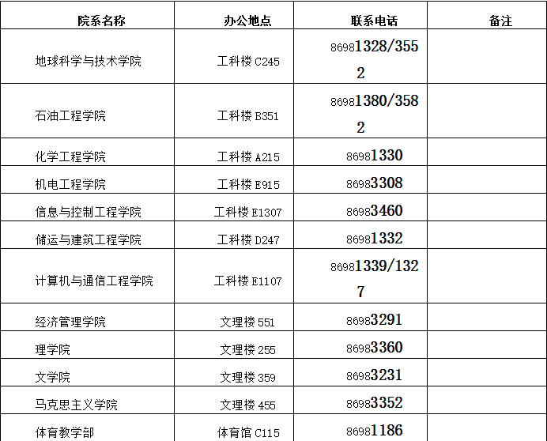

院（系）办公室/教学办

学生管理科：校医院楼南门上三楼（先到321,再到322）；电话--86981509
生活管理科：行政办公楼11楼1111；电话—86983000
备注：请先到“6-物业管理中心”，再去“生活管理科”。
团委：大学生活动中心三楼（邮局楼上，一卡通交费处北边上楼）；电话--86981265
组织部：行政办公楼15楼1510
物业管理中心：三号学生公寓网点房最南侧
财务科：行政办公楼2楼206
公安处户籍室：行政办公楼3楼302
图书馆：图书馆一楼大厅咨询处
校园一卡通：大学生活动中心1楼（玉兰苑餐厅对面，餐卡充值处）
校医院：校园西北角校医院2楼
备注：
办理离校手续时，请务必将学生证交回学籍管理科（学生证丢失者，请到校报挂失，校报办公地点：
大学生传媒中心【大学生活动中心一楼】，每周三集中办理）。
请合理安排盖章顺序，以免多余的跑动。
退学学生在办完所有手续后，凭退学证明到公安处（行政办公楼3楼302）咨询领取户口相关事宜；
到学生管理科（大学生事务中心三楼327--校医院楼南门上楼；电话--86981510）咨询领取档案相关事宜。